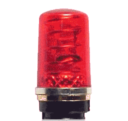

Ресурсы ROS
Описание пакета URDF
Как применять URDF в Gazebo
Пример URDF файла с разбором
Контроллеры ROS
|

SLAM на ROS с нашим любимым Tensorflow
Пакет с машинкой под Gazebo
Наша трасса
|
Ресурсы Gazebo
Контроллеры ROS в Gazebo
Как применять URDF в Gazebo
|